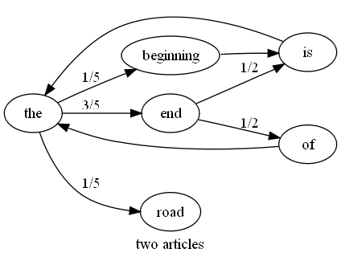

so far we have considered
now lets try markov chains; a technique that will consider the actual sequence of words
a markov chain is a way of modelling the probabisitic transistions between a number of states
lets do an example and model the road rage levels of two people, calm carl and agro arnold carl and arnold can be in one of two states; calm or agro
if carl is calm there's a 70% chance he'll stay calm and a 30% chance he'll lose it and turn agro once he's agro there's only 10% chance he'll stay agro, the other 90% of the time he becomes calm again
arnold of the other hand only has a 30% of staying calm, and once he's agro has a 50% chance of staying agro
then given a sequence of calm and agro states we can compare it to both chains and see which person it was likely to be
eg consider calm -> calm -> agro -> agro
the probability of carl's behaviour being like this is = p(calm -> calm) . p(calm -> agro) . p(agro -> agro) = 0.7 . 0.3 . 0.1 = 0.021
the probability for this being an example of arnold's behaviour is = p(calm -> calm) x p(calm -> agro) x p(agro -> agro) = 0.3 x 0.7 x 0.5 = 0.105
which after normalisation gives carl = 0.021 / 0.126 = 14% arnold = 0.105 / 0.126 = 83% so it's far more likely this was arnold
an article in our classification problem can be represented as a markov chain where the nodes are words and transistions between words exist for adjacent words in an article
eg the article 'the end is the beginning is the end' can be represented by the chain
from this we can see that is always follows beginning and end follows the 2/3rds of the time
using this chain we can decide on the probabilities of other articles having been generated by the system that generated this one eg which of 'the end is the end' and 'the beginning is the beginning' is more likely?
define p(word1 -> word2) as the probabiltiy of word2 following word1 in an article
p('the end is the end') = p(the -> end) x p(end -> is) x p(is -> the) x p(the -> end) = 2/3 x 1/2 x 1/1 x 2/3 = 2/9
p('the beginning is the beginning') = p(the -> beginning) x p(beginning -> is) x p(is -> the) x p(the -> beginning) = 1/3 x 1/1 x 1/1 x 1/3 = 1/9
so 'the end is the end' is twice as likely as 'the beginning is the beginning'
multiple articles can be used to build a markov chain representing a particular feed eg the chain for the two articles 'the end is the beginning is the end' and 'the end of the road' is 
given our two article example we have clear transistion probabilities for p(the -> road) and p(end->of) but what are the values for p(the -> is), p(blah -> is) or even p(blah -> foo)?
strictly these are all zero probabilties but we've seen previously how zeros clobber everything so we should assign these as 0/N and apply a laplace estimator but the question is; what N to use?
for p(the -> is) 0/3 might be sensible since there are 3 edges in total leaving 'the'
p(blah -> is) is a bit harder though since there are no edges leaving 'blah' there are edges entering 'is' but the probabilities are driven by p(a -> b) not p(b <- a)
p(blah -> foo) is harder still since we have no info either way on nodes 'blah' and 'foo'
we'll start with the simplest of all and just assign all these cases to the low sensible probability of 0 / total_number_of_edges and see how we go
special consideration can also be made to the frist and last words of an article when building a chain we can include special nodes for START and END in a chain and then for articles that start with 'word' we can include an edge from START -> 'word' for articles that end with 'word' we can include an edge from 'word' -> END
revisiting the chain for two articles 'the end is the beginning is the end' and 'end of the road' we have
we can ask the question which of 'the end of road end' and 'beginning of the road' is more likely?
p('the end of road end') = p(START -> the) x p(the -> end) x p(end -> of) x p(of -> road) x p(road -> end) x p(end -> END) = 1/2 x 3/5 x 1/3 x 0/15 x 0/15 x 1/3 = 15/30 x 18/30 x 10/30 x 0/30 x 0/30 x 10/30 = 16/36 x 19/36 x 11/36 x 1/36 x 1/36 x 11/36 (with estimator) = 0.000017
p('beginning of the road') = p(start -> beginning) x p(beginning -> of) x p(of -> the) x p(the -> road) x p(road -> END) = 0/15 x 0/15 x 1/1 x 1/5 x 1/1 = 0/15 x 0/15 x 15/15 x 3/15 x 15/15 = 1/20 x 1/20 x 16/20 x 4/20 x 16/20 (with estimator) = 0.00032
after normalisation gives p('the end of road end') = 0.000017 / 0.000337 = 5% p('beginning of the road') = 0.00032 / 0.000337 = 95% so 'beginning of the road' is a more probable match to these two articles
notice in the last example how our prenormalised probabilities are getting to be pretty small numbers it's not going to take long before the numbers are less than a machine can accurately handle what can we do about it? logarithms save the day!
consider the two probabilities products we had from our first carl vs arnold example carl was 0.7 x 0.3 x 0.1, arnold was 0.3 x 0.7 x 0.5
it turns out in this case, and in fact all the cases we've considered to date, we're not interested in the actual values of the probabiltity sums just whether one is greater than another
we're trying to decide if 0.7 x 0.3 x 0.1 > 0.3 x 0.7 x 0.5
recall from high school maths the following two facts about logarithms 1) they preserve order; ie log(a) > log(b) if a > b 2) they reduce multiplication to addition; ie log(ab) = log(a) + log(b)
so 0.7 x 0.3 x 0.1 > 0.3 x 0.7 x 0.5 is equivalent to log(0.7 x 0.3 x 0.1) > log(0.3 x 0.7 x 0.5) (from 1) is equivalent to log(0.7) + log(0.3) + log(0.1) > log(0.3) + log(0.7) + log(0.5) (from 2)
bye bye multiplication of really small numbers, hellooooo high precision comparisons :)
so coming back to our classification problem we can build two chains; one for articles to read and one for articles to ignore each new article can be compared to each chain to see which is more likely to be applicable how does it compare to our previous techniques?
but first does it do better including or excluding the start and end probabilities? turns out it's slightly better when we include these probabilities
and how does it do against our other classifier methods? pretty poorly actually... and it's interesting how wildly varying the markov chain results are
view the code at github.com/matpalm/rss-feed-experiments
also download the dot files used to generate the markov chain images
july 2008